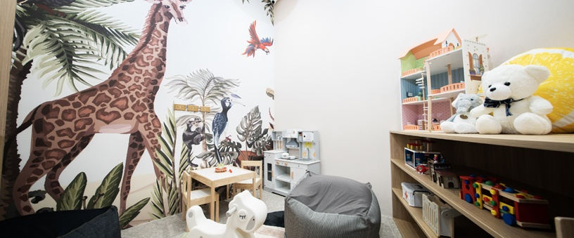
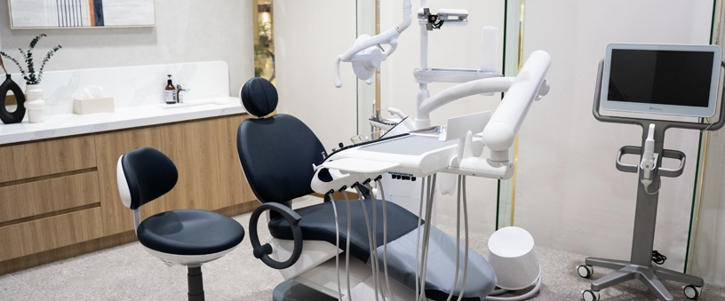

Dentist Ortigas - Shangri-La Plaza Dental Clinic
Mandaluyong City
Our Ortigas clinic is on the fourth floor of the East Wing at Shangri-La Plaza, EDSA corner Shaw Boulevard, Mandaluyong City.
Mandaluyong City
Our Ortigas clinic is on the fourth floor of the East Wing at Shangri-La Plaza, EDSA corner Shaw Boulevard, Mandaluyong City.
4F East Wing, Shangri-La Plaza, EDSA corner Shaw Boulevard, Ortigas Center, Mandaluyong City.
The complex is split into two connected buildings. You want the East Wing, not the Main Wing, and the fourth floor. If you enter through the Main Wing, cross into the East Wing on any level and take the escalators or lifts up to level four.
Shangri-La Plaza
Level four of the East Wing, Mandaluyong City. Paid parking in the building, connected to both sides of the complex.
The complex contains two connected buildings and only one of them holds the clinic: the East Wing, fourth floor.
Monday to Sunday, 10:30 to 19:00. There is no separate weekend schedule to check and no closing day to plan around.
If you need a later slot
This clinic opens later in the morning and closes earlier in the evening than our BGC and Alabang clinics, so if you need an appointment after 19:00, book at Mitsukoshi BGC or Alabang Town Center instead. Stating that plainly is more useful to you than implying every clinic keeps the same hours.
+63 968 851 5420
Call the number above to reach this clinic. Use email if your question is not time-sensitive or if you want to send records ahead of a first visit.
Booking a longer procedure
The last appointment of the day is set by treatment length. A longer procedure needs an earlier slot, so say what you are booking when you call and the front desk will place it where it fits.
Public holiday hours can differ from the schedule above. Check with the clinic before visiting on a public holiday.
Elevate Dental is a group of specialists. Our specialists work by discipline, which means an orthodontic case is planned by an orthodontist, a root canal is performed by an endodontist, and a crown or bridge is designed by a prosthodontist.
For a patient working in Ortigas, that matters in a specific way.
A case that would otherwise cost you a second trip across the city to a different practitioner is handled by people who work in the same group and share the same records. The full roster, with each specialist's discipline, is published on the specialists page.

Which specialists practise at this address, and on which days, is not published here, and no clinician is named on this page.
Which of the practices listed above run at this address, and on which days, is not stated here, so this page does not claim that all of them are delivered at this clinic.
3D CBCT imaging is installed at this clinic. CBCT is available at all four of our clinics, so the scan your case needs is taken where you are seen rather than at a separate imaging center.
A CBCT scan shows bone volume, nerve position and root anatomy in three dimensions, which is what implant placement, impacted extractions and difficult root canals are planned against.

The equipment listed here is described across the practice as a whole. Cone beam CT is confirmed at all four clinics; availability of the other systems at this address is not stated here.
3D CBCT imaging
Bone volume, nerve position and root anatomy in three dimensions, taken in the same building where the case is planned.
Installed at all four clinicsiTero intraoral scanner
Digital scanning of the teeth in place of putty impressions. Worked with across the group.
RayFace facial scanner
Facial scanning, used where a plan has to account for the face and not only the teeth. Worked with across the group.
OccluSense bite analysis
Measurement of how the teeth meet under load, rather than an impression of how they sit at rest. Worked with across the group.
Sol Dental Laser
Laser instrumentation, used in soft-tissue work. Worked with across the group.
AirFlow (guided biofilm therapy)
The cleaning protocol that removes the film before the deposit. Worked with across the group.
Zoom whitening
In-clinic whitening, carried out under supervision. Worked with across the group.
Piezotome
Ultrasonic instrumentation, used in surgical work. Worked with across the group.
Self-pay, stated plainly
Elevate Dental does not accept HMO or dental insurance. All treatment is self-pay. HMO coverage cannot be used for dental treatments at our clinics.
Your treatment plan is quoted after clinical assessment, so you know the figure before anything begins. Published treatment prices for the group are on the prices page.
Patients treated here
Patients have published written accounts of their treatment with us, and some of those accounts name the clinic they were treated at. None of them appears on this page, and the reason is set out beside this paragraph rather than left as a gap.
Book at the Ortigas clinic, or call it directly on +63 968 851 5420 and speak to the front desk about which day suits your case.